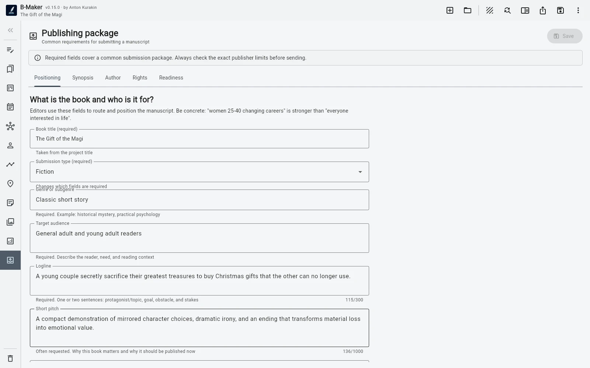

Or open an included demo book.
All projects
 B-Maker
B-Maker

Local-firstWindows + Web
Your writing is a project, not a pile of documents.
Start simple. Grow when you need to. Open B-Maker and write one article or one chapter. Add structure, idea maps, versions, planning, analytics, and publishing tools only as the work grows.
No mandatory cloud. Your project remains a file you control.
Fast start
Open it. Start writing.
No setup wizard and no need to learn a large system first. On first launch B-Maker opens a built-in guide project, so you can see a real book immediately — or close it and start your own text.
The structure can grow later.
Discover deeper tools only when you need them.
From articles to a book
Start with an article. Grow into a book.
You do not have to begin with a 500-page novel. Write one article. Then another. Find your rhythm, collect ideas, and build up material without committing to a huge structure on day one.
Keep active pieces in Drafts and move finished work to an organizational folder such as Published. That folder and its subtree stay out of the book export; collapse it and finished work stops cluttering the current view while remaining searchable.
Over time, a series of articles can become the raw material for a larger work — and the notes, drafts, versions, and context are already there.
Start writing first. Let the bigger structure appear when you need it.

Write
See one chapter — or the whole manuscript.
Work in a single chapter or open the full-manuscript editor and read chapters and nested sections as one continuous scroll. Each section still saves independently in its current version.
The editor supports formatted text, lists, quotes, important blocks, images, focus mode, split view, and visual preview while the project keeps portable Markdown inside.
A clean writing surface without giving up structure.

Organize without moving
Your working view does not have to be your book structure.
Keep the manuscript tree structural. Then build manual collections with their own order or saved searches by text, status, and section type.
A collection can show only the chapters you are revising this week. A saved search can surface every draft scene. Neither requires moving anything in the actual book.
Reorganize your attention, not your manuscript.

Think visually
The idea map is part of the writing project.
Place notes, chapters, scenes, characters, plotlines, images, and planning cards on freeform boards. Connect them, search and filter the canvas, use multiple boards, a minimap, auto-layout, stacks, magnetic areas, and image nodes.
The map is not decorative: drag real project entities onto it, add a complete structure branch, jump between the map and editor, or turn notes and groups into real chapters and sections with an initial text version.
Ideas can become manuscript instead of being copied into it.

Plan the story
Characters and plot stay connected to the manuscript.
Track characters, custom properties, relationships, arc points by scene, plotlines, locations, and project notes. Planning cards link back to manuscript elements in both directions.
Use the story grid to see how plotlines cross chapters and scenes without maintaining a second spreadsheet beside the book.

See the project from above
The manuscript board turns the book into a working surface.
Use statuses, search, and filters by characters and plotlines to see what is drafted, what needs revision, and where a particular character or storyline appears.
The board is another view of the same manuscript. Moving through the work does not mean maintaining another planning system.
One project. Several useful views.

Revise safely
Rewrite without destroying yesterday's work.
Keep several revisions of a chapter, scene, or article. Rename, duplicate, compare, lock a finished version, choose the current one, and return to an earlier idea when you need it.
Comments can belong to the whole text or a specific passage. Locked versions open read-only, so finished work is harder to change by accident.
No more final.docx, final-2.docx, and REAL-final.docx.

Analyze
See the manuscript the way an author needs to see it.
B-Maker counts words, characters, author sheets, estimated A4/A5 pages, reading time, and dialogue share. It also looks for repetition, long sentences, filler words, empty sections, missing current versions, draft markers, unused planning cards, and unlinked scenes.
Russian and English editorial checks cover typos, mixed alphabets, nearby repetition, repeated sentence openings, punctuation, dialogue typography, unpaired brackets and quotes, long paragraphs, and more.
Not a generic dashboard — signals that help finish the text.

Preview the book
See a book before you export a book.
The full PDF preview uses current versions, cover, illustrations, hidden headings, and explicit page breaks. Working sections can remain in the project while being excluded from the final book.
The moment a manuscript starts to look like a finished book matters.

Prepare to publish
Export a package, not just a file.
The publishing workspace separates positioning, blurb, synopsis or proposal, author information, rights, and AI-use declaration. Required fields, typical limits, explanations, and a live readiness checklist show what is still missing.
Export the whole project or a selected section with its subsections — including a single article inside an archive folder — to DOCX, EPUB, PDF, TXT, or Markdown.
From “the text is finished” to “the book is ready to send.”

More when you need it
Powerful later. Simple at the start.
Book and chapter goals, daily activity, and writing-session history.
Hide headings, exclude service sections, force page breaks, and restore nested sections from Trash.
Bring TXT, Markdown, and DOCX into a new project or a branch of an existing one.
Manual backups, history, restore, integrity checks, and pre-export validation.
Five interface themes plus project atmospheres for fiction, articles, research, horror, technology, history, poetry, fantasy, and more.
Configure OpenAI Responses API with the key stored outside the book file. AI text generation is not presented as a required workflow.
Compare
How is B-Maker different?
Different writing tools optimize for different workflows. See the trade-offs instead of a feature-count contest.
Writing software
B-Maker vs Scrivener
Progressive complexity and one portable project versus a mature long-form power tool.
Read comparison →Idea mappingB-Maker vs Scapple
An integrated project-aware idea map versus a deliberately freeform thinking canvas.
Read comparison →Story planningB-Maker vs Plottr
Writing and planning in one project versus specialist visual outlining.
Read comparison →Local-first
One project. One file. Yours.
A B-Maker project is a portable .bmaker SQLite file. Books, articles, versions, planning, comments, cover, and illustrations do not have to live in somebody else's cloud.
Keep it on your computer, back it up however you prefer, move it to another machine, or download the browser project as a portable .bmaker file.
No mandatory cloud storage
No server dependency for your writing
Your project remains a file you control
BooksArticlesVersionsNotes + ideasMy Writing
my-writing.bmakerPlatforms
Write where you work.
Use the native Windows application or open B-Maker in a modern browser on other devices.
Windows
Use B-Maker as a desktop application with local project files.
Download for WindowsMac, Linux, Chromebook and tablets
Open B-Maker directly in a modern browser and download your project as a portable file when needed.
Open web appStart with a page. Grow into a system.
One article, one chapter, one idea. Add structure and deeper tools only when your writing actually needs them.
One project. One file. Yours.